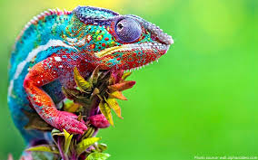
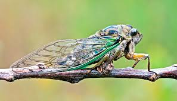
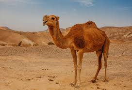
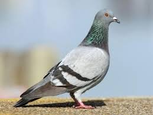

1. Chameleon
Interesting Facts about a Chameleon:-
- Their feet work like salad tongs.
- Almost half of all the known species live in Madagascar.
- They change their colour mainly to communicate or regulate body temperature. 
- For more interesting facts about Chameleons, visit this link
- Click on the picture to below to make your own origami Chameleon.

2. Cicada
Interesting Facts about a Cicada:-
- Cicadas can survive a huge fall as babies, or nymphs. They are about the size of a grain of rice when they drop from a tree branch to the ground and start digging.
- They improve lawns by digging tunnels that allow air into the soil. When they die, their rotting bodies put nitrogen into the soil.
- Their predators, or animals that will eat them, don’t know they’re coming. Lots of animals, including birds, mice and raccoons, are in for a bug surprise! 
- For more interesting facts about Cicadas, visit this link
- Click on the picture below to make your own origami Cicada.

3. Panda
Interesting Facts about a Panda:-
- The giant panda's distinct black-and-white markings have two functions: camouflage and communication. Most of the panda - its face, neck, belly, rump - is white to help it hide in snowy habitats. The arms and legs are black, helping it to hide in shade.
- Like domestic cats, giant pandas have vertical slits for pupils.
- They have an extended wrist bone that they use like a thumb to help them grip food.
- For more interesting facts about Pandas, visit this link
- Click on the picture below to make your own origami Panda.


4. Camel
Interesting Facts about a Camel:-
- Camels have three sets of eyelids and two rows of eyelashes to keep sand out of their eyes.
- Camels have thick lips which let them forage for thorny plants other animals can’t eat.
- Camels can completely shut their nostrils during sandstorms. 
- For more interesting facts about Camel, visit this link
- Click on the picture below to make your own origami Camel.

5. Pigeon
Interesting Facts about a Pigeon:-
- Pigeons have excellent hearing abilities. They can detect sounds at far lower frequencies than humans are able to, and can thus hear distant storms and volcanoes.
- Pigeons can fly at altitudes up to and beyond 6000 feet, and at an average speed of 77.6 mph.
- They can also recognise each lettter of the human alphabet, differentiate between photographs and even distinguish between different humans within a photograph. 
- For more interesting facts about Pigeons, visit this link "
- Click on the picture below to make your own origami Pigeon.